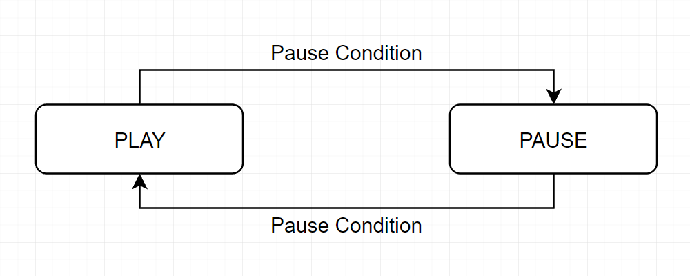
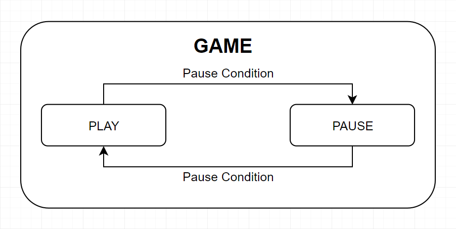
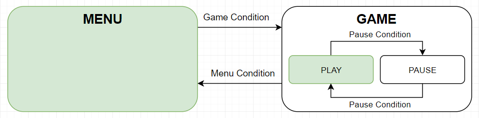
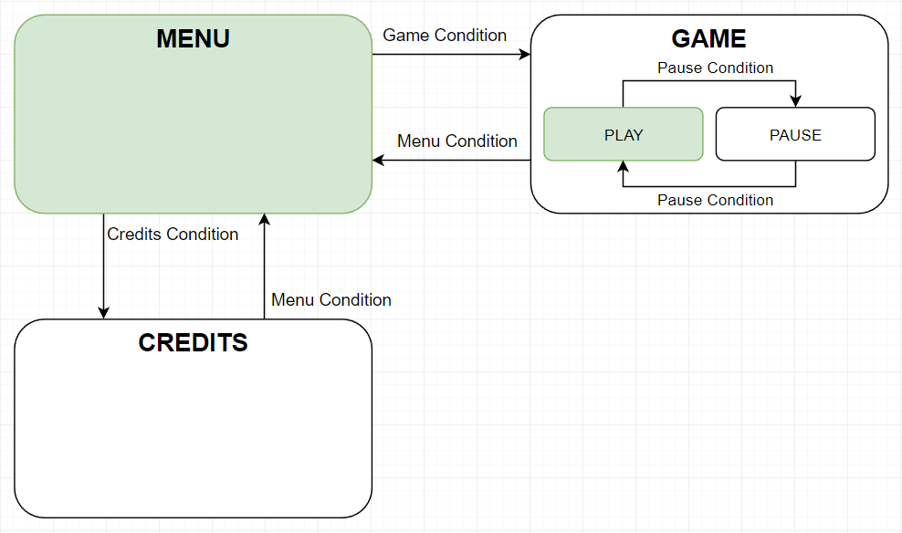

Stateful Behaviour
In this section, we will explore an optional tool provided by AlchemyBow.Core that helps you manage the state of your app or game.
Introduction
Before we dive into the implementation, let’s introduce the concept of stateful behavior through a series of examples.
Imagine a simple PC game where the player can press the "Escape" button to toggle the pause menu.
In this case, the game can exist in two states: the play state, where the player is actively playing, and the pause state, where the player is interacting with the menu.
It's clear that there are relationships between these states: the game can transition from play to pause, and vice versa, but only when the player clicks the "Escape" button.
From this, we can identify three key elements: states, transitions that connect them, and conditions that trigger the transitions.

For the next part, let’s make two assumptions about the imaginary game:
- States are used to toggle game modules, for example, enabling or disabling the player avatar.
- The pause menu doesn’t cover the entire screen—the remaining elements are slightly dimmed.
With these assumptions in mind, we can identify a new problem. Since the player avatar is visible in both the play and pause states, any transition between these states would cause the avatar module to toggle unnecessarily.
To solve this, we can introduce an additional game state, which acts as a parent for both the play and pause states. This way, the shared modules, like the player avatar, can be handled by the parent, avoiding redundant toggling when transitioning between play and pause.
In essence, by nesting states, we can better manage common modules and eliminate unnecessary operations, resulting in a cleaner and more efficient system. 
Let’s make a few more assumptions to finalize our example:
- The game is very simple and runs on a single scene.
- There is a main menu that covers the entire screen.
Now, imagine launching the game. The first thing you see is the main menu. When you click the play button, the actual game starts. Then, you can pause the game and exit to the main menu. If you click the play button again, the game will start, but it won’t be paused.
So, we should note that there is a default state at each nesting level, which is entered every time a parent state is entered.

Implementation
In this section, we will recreate the concept of stateful behavior from the introduction. To make it more complete, let's add one more state - the credits state. It should look like this: 
Creating a State
The core component of stateful behavior is the state itself. A state can be entered and exited, and to create one, you need to implement the IState interface. For example, let's create the pause state:
using AlchemyBow.Core.IoC;
using AlchemyBow.Core.States;
[InjectionTarget]
public class GamePauseState : IState
{
[Inject] // Suppose such a module exists
private readonly PauseMenuViewController pauseMenuViewController;
[Inject] // Suppose such a module exists
private readonly GameTimeController gameTimeController;
public void Enter()
{
pauseMenuViewController.SetActive(true);
gameTimeController.PauseTime();
}
public void Exit()
{
pauseMenuViewController.SetActive(false);
gameTimeController.UnpauseTime();
}
}
Since the IState is an interface, it can be implemented by any class — whether a plain C# class (like the example), or a class that inherits from MonoBehaviour, ScriptableObject, or any other Unity-specific class.
In order for the state to have its fields injected, you must bind it, just like you would with any other class.
Creating a Condition
Similar to states, conditions are created by implementing the ICondition interface. There is no single "perfect" way to implement a condition. Depending on the situation, conditions can act as mediators between the state machine and other scripts, or they can function as fully independent entities. For example, they could be MonoBehaviour instances with an Update() method or other implementations based on your needs.
The important part to understand is how the state machine uses conditions:
- When a state is entered, all its conditions are activated, and the state machine subscribes to their
Triggeredevents. - When the
Triggeredevent is raised, the state machine checks the active state transitions withICondition.CheckCondition()and starts the first transition that is fulfilled. - When a state is exited, all its conditions are deactivated, and the state machine unsubscribes from their
Triggeredevents.
Let’s now create the PauseCondition:
using AlchemyBow.Core.States;
public class PauseCondition : ICondition
{
public event System.Action Triggered;
private bool conditionValue;
// Sets the internal value and raises the event.
public void Trigger()
{
conditionValue = true;
Triggered?.Invoke();
}
// Resets the internal value.
public void SetActive(bool value)
{
conditionValue = false;
}
public bool CheckCondition()
{
return conditionValue;
}
}
The condition above acts like a trigger button. The Trigger() method raises the event, and the SetActive(bool value) method resets its internal state. You can bind it and then inject it wherever you need it, allowing you to call the Trigger() method as a consequence of clicking the "Escape" button.
The same effect as described above can also be achieved using the PrototypeCondition.
using AlchemyBow.Core.States.Prototyping;
public class PauseCondition : PrototypeCondition
{
}
Tip
The condition can inherit from MonoBehaviour to receive Unity messages, or from ScriptableObject to be more convenient for editor drag-and-drop functionality.
Creating a State Machine
Now that we know how to create states and conditions, it's time to build the state machine itself. The framework provides a predefined hierarchical finite state machine implementation. Let's break down these terms:
- Predefined means that all states, transitions, and conditions are created during initialization, allowing us to clearly plan and view the entire structure in one place.
- Hierarchical means that states can be nested.
- Finite means that there is a finite number of states.
The state machine is represented by the StateGraph class, which we build using the StateGraphComposer class, representing a single node (state).
For now, let's assume that we have all the states and conditions set up (we’ll revisit these concepts in more detail later).
private StateGraph CreateStateGraph()
{
// Similar to the scenario where gameState is a parent of
// gamePlayState and gamePauseState, we need to create
// a parent for menuState, creditsState, and gameState.
// Since they don't have any shared elements, we can create
// a simple root state with null.
var rootComposer = new StateGraphComposer(null);
// Create composers for each state.
var menuComposer = new StateGraphComposer(menuState);
var creditsComposer = new StateGraphComposer(creditsState);
var gameComposer = new StateGraphComposer(gameState);
var gamePlayComposer = new StateGraphComposer(gamePlayState);
var gamePauseComposer = new StateGraphComposer(gamePauseState);
// Mark gamePlayState and gamePauseState as children of gameState
// and link them accordingly.
// The first child added is the default one!
gameComposer.AddNode(gamePlayComposer);
gameComposer.AddNode(gamePauseComposer);
gameComposer.AddLink(gamePlayComposer, gamePauseComposer, pauseCondition);
gameComposer.AddLink(gamePauseComposer, gamePlayComposer, pauseCondition);
// Mark menuState, creditsState, and gameState as children of the root
// and link them accordingly.
// The first child added is the default one!
rootComposer.AddNode(menuComposer);
rootComposer.AddNode(creditsComposer);
rootComposer.AddNode(gameComposer);
rootComposer.AddLink(menuComposer, creditsComposer, creditsCondition);
rootComposer.AddLink(creditsComposer, menuComposer, menuCondition);
rootComposer.AddLink(menuComposer, gameComposer, gameCondition);
rootComposer.AddLink(gameComposer, menuComposer, menuCondition);
// Validate the graph, but only in the Unity editor.
#if UNITY_EDITOR
rootComposer.Validate();
string paths = "Graph paths:\n";
foreach (var path in rootComposer.GetGraphPaths())
{
paths += path + "\n";
}
Debug.Log(paths);
#endif
// Build and return the actual StateGraph.
return StateGraph.Build(rootComposer);
}
Note
You can reuse conditions and states (see pauseCondition in the example). However, they cannot be active at the same time. The StateGraphComposer.Validate() method ensures the correct composition.
Tip
The validation methods use the ToString() method to determine the names of the states (IState). You can override the ToString() method in your IState implementations for more readable output.
Connecting the State Machine
Now, let's see how to connect the state machine to the framework. It's typically a good idea to delegate this task to a separate class for better organization, but for clarity, we'll implement it directly in the CoreController.
using AlchemyBow.Core;
using AlchemyBow.Core.IoC;
using AlchemyBow.Core.States;
using System.Collections.Generic;
using UnityEngine;
public class MyCoreController : CoreController<MyCoreProjectContext>
{
// Assuming that the state and condition classes are defined
// and work like the previous examples.
private readonly MenuState menuState = new MenuState();
private readonly CreditsState creditsState = new CreditsState();
private readonly GameState gameState = new GameState();
private readonly GamePlayState gamePlayState = new GamePlayState();
private readonly GamePauseState gamePauseState = new GamePauseState();
private readonly MenuCondition menuCondition = new MenuCondition();
private readonly CreditsCondition creditsCondition = new CreditsCondition();
private readonly GameCondition gameCondition = new GameCondition();
private readonly PauseCondition pauseCondition = new PauseCondition();
// The state machine.
private StateGraph stateGraph;
protected override void InstallAdditionalBindings(IBindOnlyContainer container)
{
// Bind the conditions to keys so that they can be injected as dependencies.
container.Bind(menuCondition);
container.Bind(creditsCondition);
container.Bind(gameCondition);
container.Bind(pauseCondition);
// Bind the states (they need dependencies, but should not be accessible externally).
container.BindInaccessible(menuState);
container.BindInaccessible(creditsState);
container.BindInaccessible(gameState);
container.BindInaccessible(gamePlayState);
container.BindInaccessible(gamePauseState);
base.InstallAdditionalBindings(container);
}
protected override void OnLoadingFinished()
{
base.OnLoadingFinished();
// Create and activate the state machine once loading is complete.
stateGraph = CreateStateGraph();
stateGraph.Enter();
}
protected override void OnSceneChangeStarted()
{
// Deactivate the state machine when unloading begins.
stateGraph.Exit();
base.OnSceneChangeStarted();
}
private StateGraph CreateStateGraph()
{
// ...
}
protected override IEnumerable<ICoreLoadable> GetLoadables()
{
return null;
}
}
Remarks
In this section, you will find some interesting details on this topic.
Unity Messages in States
You may be wondering how to get Unity messages (Update(), OnGUI(), etc.) inside states. The most common options are:
- Delegating Unity-specific tasks to other classes and simply toggling their activity in the state. This keeps state classes focused on handling state transitions and avoids cluttering them with Unity-specific behavior.
- States can inherit from the
MonoBehaviourclass if you need to directly handle Unity messages within them. - You can combine the
StateGraph.EnumerateDown(...)method with interfaces to invoke a message in order from the parent to the leaf. For example:
public class MyCoreController : CoreController<MyCoreProjectContext>
{
// ...
private StateGraph stateGraph;
// ...
private void Update()
{
// Iterate through states and call Update if they implement IUpdatable
stateGraph.EnumerateDown(state =>
{
if (state is IUpdatable updatable)
{
updatable.Update();
}
}, true);
}
}
// A custom interface for states that need to be updated.
public interface IUpdatable
{
void Update();
}
Conditions Gotchas
- If multiple conditions are true when the state is activated, the order in which the links were added determines which transition is triggered.
- Raising the
ICondition.Triggeredevent in theICondition.SetActive(bool value)method does not affect the state machine. In case the state is activated, all conditions are checked when activation is complete. In case the state is deactivated, the event is completely ignored.